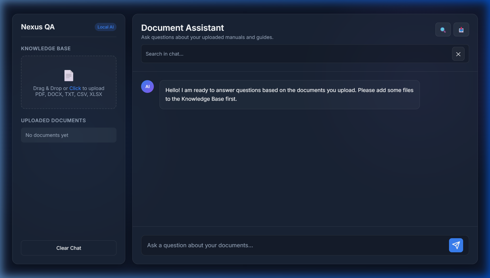

Nexus
Knowledge QA
A local Retrieval-Augmented Generation (RAG) system that lets you upload documents (PDF, DOCX, CSV, XLSX, TXT) and ask natural-language questions. Powered by LangChain, ChromaDB for vector storage, and dual-LLM fallback (Groq Llama 3 → Gemini 2.5 Flash).

System_Specs
01_System_Architecture
Nexus QA is a full-stack RAG application with a Python FastAPI backend and a glassmorphic HTML/CSS/JS frontend. Documents are uploaded, chunked, embedded, and stored in a local ChromaDB vector database. Queries retrieve semantically relevant chunks and feed them into an LLM for grounded, context-aware answers.
Document Ingestion
When a user uploads a file, the backend auto-detects the format and loads content using the appropriate LangChain loader. The text is then split into overlapping chunks for optimal retrieval.
# File type routing
if fname.endswith(".pdf"):
loader = PyPDFLoader(file_path)
elif fname.endswith(".docx"):
doc = docx.Document(file_path)
elif fname.endswith(".csv"):
df = pd.read_csv(file_path)
# Chunking with overlap for context
text_splitter = RecursiveCharacterTextSplitter(
chunk_size=1000, chunk_overlap=200
)Vector Embedding
Text chunks are converted to dense 384-dimensional vectors using the open-source Sentence Transformers model (all-MiniLM-L6-v2) running locally — no API calls required for embedding.
// Data Flow
End-to-end data flow from document upload to AI-generated answer:
02_RAG_Pipeline
The core of Nexus QA is the Retrieval-Augmented Generation pipeline. When a user asks a question, the system performs a semantic similarity search against the stored vectors, retrieves the top-4 most relevant document chunks, builds a context-grounded prompt, and sends it to the LLM for a comprehensive answer.
Dual LLM Strategy
The system uses a primary → fallback architecture for maximum reliability. If Groq's Llama 3.1 fails (rate limit, downtime), it automatically switches to Google's Gemini 2.5 Flash.
# Primary: Groq (Llama 3.1-8B)
try:
client = get_groq_client()
response = client.chat.completions.create(
model='llama-3.1-8b-instant',
messages=[{"role": "user", "content": prompt}],
temperature=0.7,
)
except Exception as groq_error:
# Fallback: Gemini 2.5 Flash
gemini_client = get_gemini_client()
response = gemini_client.models.generate_content(
model='gemini-2.5-flash',
contents=prompt,
)Context-Grounded Prompting
The system constructs a detailed prompt incorporating chat history for multi-turn conversations and document context with source citations. The LLM is strictly instructed to answer only from document context.
// Supported Document Formats
| Format | Loader | Processing Method |
|---|---|---|
| PyPDFLoader | Page-by-page extraction with metadata | |
| 📝 TXT | TextLoader | UTF-8 text ingestion |
| 📋 DOCX | python-docx | Paragraph-level text extraction |
| 📊 CSV | pandas | DataFrame → Markdown table conversion |
| 📈 XLSX | pandas + openpyxl | Excel → Markdown table conversion |
03_Frontend_UI
The frontend is a premium glassmorphic chat interface built with vanilla HTML, CSS, and JavaScript — no framework required. It features real-time typing animations, drag-and-drop file upload, Mermaid diagram rendering, markdown parsing, in-chat search, and PDF export.
Chat Interface
Full chat with typing animationDrag & Drop
Drag files into knowledge baseMermaid Diagrams
AI-generated flowchartsChat Search
Search within chat historyPDF Export
Export conversations as PDFAuto-Summarize
One-click doc summaries
04_API_Reference
The FastAPI backend exposes five RESTful endpoints for document management and querying.
// Endpoint Registry
| Method | Endpoint | Description |
|---|---|---|
| POST | /upload | Upload & process a document into ChromaDB |
| POST | /query | Query documents with chat history context |
| GET | /documents | List all uploaded documents |
| DELETE | /documents/{filename} | Delete document from disk & vector store |
| POST | /summarize | Generate AI summary of a document |
// Query Payload Example
POST /query
Content-Type: application/json
{
"messages": [
{ "role": "user", "content": "What is the DRCE process?" },
{ "role": "assistant", "content": "The DRCE process..." },
{ "role": "user", "content": "Elaborate on step 2" }
]
}
// Response:
{
"answer": "Step 2 involves...",
"sources": [
{ "filename": "manual.pdf", "page": 3 },
{ "filename": "manual.pdf", "page": 7 }
]
}05_Full_Stack
Complete technology stack and file structure of the Nexus Knowledge QA system.
Backend Dependencies
File Structure
local-rag-qa/
├── backend/
│ ├── main.py # FastAPI app (316 lines)
│ ├── .env # API keys
│ ├── chroma_db/ # Persistent vector store
│ │ └── *.sqlite3 # SQLite + HNSW index
│ └── uploaded_docs/ # Uploaded file storage
├── frontend/
│ ├── index.html # Chat UI layout
│ ├── style.css # Glassmorphic theme
│ └── script.js # Chat logic (489 lines)
└── venv/ # Python virtual env// Frontend Libraries
Markdown Rendering
- marked.js — Markdown → HTML
- Tables, lists, code blocks
Diagram Engine
- Mermaid.js v9.4.3
- Dark theme, auto-render
Export
- html2pdf.js v0.10.1
- A4 PDF generation